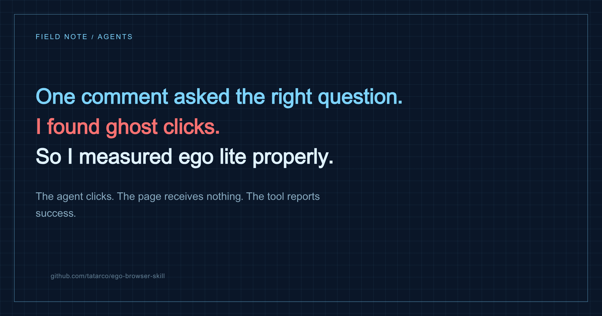

Browser automation · Reliability · Measurement
Claude clicked the button. The button was not clicked.
In part one I said the control model in ego lite was "a protocol, not a hope". Someone replied with the one question I couldn't answer: what happens when an action silently doesn't land? No captcha, no 2FA, nobody to hand off to - the agent just works confidently on nothing for ten minutes. So I measured it. Four out of five impossible actions came back as success.

The question
The handoff part is the most important thing there, but it assumes the agent knows the wheel was taken from it. The failure I hit is much quieter. The browser stops responding, every action comes back successful, the coordinates look right, and simply nothing lands on the page. There's no captcha and no 2FA, so there's nobody to call. The agent keeps working in full confidence for ten minutes on nothing. So what I'd want to know about the task space is whether an action that didn't land comes back as an error or as ok. That's the difference between a protocol and a hope. - Omri Pitaru, in the comments on part one
That is a better question than the post it was answering. "Did it work?" is not the same as "did the call return". Every agent framework blurs those two, and the blur is invisible precisely when it matters.
The method
You cannot measure this by asking the tool. You need an independent source of truth inside the page, incremented only by a real event handler, and then you compare what the tool reported against what the page observed.
<button id="target">CLICK TARGET</button>
<input id="field">
<div id="overlay"></div> <!-- transparent, position:fixed, inset:0, z-index:9999 -->
<script>
window.__clicks = 0
// ONLY a real, dispatched click can increment this
document.getElementById('target')
.addEventListener('click', () => { window.__clicks++ })
</script>Then each scenario runs the same shape: reset, read truth, perform the action, read truth again, and record both the return value and the delta.
const run = async (name, fn) => {
await js(`window.__reset()`)
const before = await js(`window.__clicks`)
let ret, err = null
try { ret = await fn() } catch (e) { err = e.message }
await wait(0.6)
const after = await js(`window.__clicks`)
cliLog({ name, returned: ret, threw: err, landed: after - before })
}The results
| Action | Tool returned | Page observed |
|---|---|---|
click #target (baseline) | ok | 1 click |
click #target, transparent overlay on top | ok | 0 clicks |
click #target with pointer-events: none | ok | 0 clicks |
click at [1000, 700] - empty space | ok | 0 clicks |
fillInput into a disabled field | ok | value stayed empty |
fillInput into a readonly field | ok | value stayed empty |
click #ghost - selector matches nothing | THREW "Element not found" | - |
So the boundary is sharp, and it is not where you would want it:
It verifies that it found the target. It does not verify that anything happened.
"I can't find the button" is an error. "I found it, I clicked it, and nothing happened" is a success.
The phantom edit - worse than a no-op
The disabled-field case turned out to be the nastiest of the set. I armed listeners to record every event the field received, then typed into it while disabled:
{ value: "", seen: ["input/synthetic", "input/synthetic", "change/synthetic"] }The value never changed - but the page did receive input and change events. A React or Vue app listening for change can happily react to an edit that never happened, fire a save, flip a dirty flag, enable a submit button. The field is empty, the app thinks it isn't, and the agent was told everything went fine. That is a data-integrity bug with three parties and no error anywhere in the chain.
The surprise: the frozen renderer is honest
Omri's literal scenario is a browser that stops responding. So I froze the main thread for six seconds and clicked during the freeze:
click during freeze -> returned ok after 5707ms
after thaw, clicks landed = 1It did not fire into the void. It blocked for 5.7 seconds, waited for the main thread, and the click genuinely landed once the page thawed. So at this layer a frozen renderer produces latency, not a lie - and latency is something you can notice and time out on.
Which flips the intuition. The dangerous cases aren't the dramatic ones. A hung browser is loud. The lies come from the boring stuff: a transparent overlay, a cookie banner you didn't notice, a field that's disabled for half a second while a form validates.
Observation doesn't save you either
My next assumption was that a careful agent would catch this by looking rather than by trusting the return value. It doesn't. With the blocking overlay in place, snapshotText() reports the button exactly as before:
button [ref=3, loc=unstable]
text "CLICK TARGET"
snapshot mentions the overlay at all: falseAnd a screenshot is pixel-identical, because the overlay is transparent. Both of the agent's senses report a perfectly clickable button. The accessibility tree describes structure, not reachability - it has no concept of "something else will receive this click".
The fix is one line
Stop asserting that the action succeeded. Assert that something changed:
const before = await js(`window.__clicks`)
await click('#target')
const after = await js(`window.__clicks`)
// after === before -> it did not landIt caught every case in the table. In real life the counter is whatever the page gives you: a URL change, a row count, a toast, a disabled button becoming enabled, an element that should now exist. The principle is that the assertion has to read from the page, not from the tool - because the tool is the thing whose honesty you're testing.
This is also why the scriptable-runtime interface from part one matters more than I realised. A tool-call-per-click agent physically cannot do a before/after read cheaply - that's three round-trips per interaction. In a script it's three lines and no extra latency.
The honest comparison
Here is where I have to give ground. Playwright runs actionability checks before every action: the element must be attached, visible, stable, enabled, and must actually receive events - it hit-tests to confirm nothing is on top of it. Those checks would have caught four of the five failures above, by design, with a real error message naming the intercepting element.
Playwright also has an escape hatch, force: true, which skips all of them - and the docs warn that it "may mask underlying test design or app issues".
An agent browser's click is, in effect, Playwright's force: true - always on.
That is the trade nobody states out loud. The thing that makes Playwright annoying in interactive use - the waiting, the strictness, the timeouts that fire when an element is almost ready - is exactly the thing that turns a silent no-op into a loud error. Agent browsers optimise for "just do the thing", and pay for it in unverified actions.
So what do I actually recommend
- Session and control - the isolated task space with your logins, and a handoff protocol where the user always wins - is still the thing ego lite has that nothing else does. Part one stands.
- Action verification is Playwright's, clearly, and it is not close.
- You can have both for the price of one before/after read per meaningful action. Do it for anything that writes: submits, payments, deletes, saves. Skip it for navigation and reads, where the next observation catches you anyway.
- Never trust a screenshot as proof an action landed. It is proof of what was painted, which is a different claim.
And the meta-lesson, which is the one I'll actually keep: I published a claim about a protocol, a stranger asked the one question that would falsify it, and the answer was partly no. That is a better outcome than being right.
Run it yourself
Everything here is open source at github.com/tatarco/did-it-land (MIT): the probe page, the harness, and verify.js with drop-in clickAndVerify / fillAndVerify wrappers. It also ships a companion SKILL.md - the hardening rules this experiment produced, meant to sit alongside whatever skill your browser vendor gives you.
Point it at whatever agent browser you use - Playwright MCP, Chrome DevTools MCP, the Claude extension - and compare. I'd genuinely like to know which ones report honestly; open an issue with your results.